| 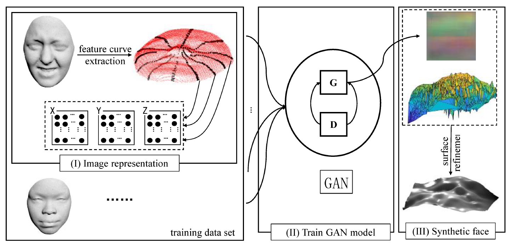 | Guoliang Luo, Wei Zeng, Wenqiang Xie, Haopeng lei, and Chuhua Xian, "An Image Representation for the 3D Face Synthesis", Computer Animation and Social Agents 2018, May 21-23, 2018 in Beijing, China. |
| 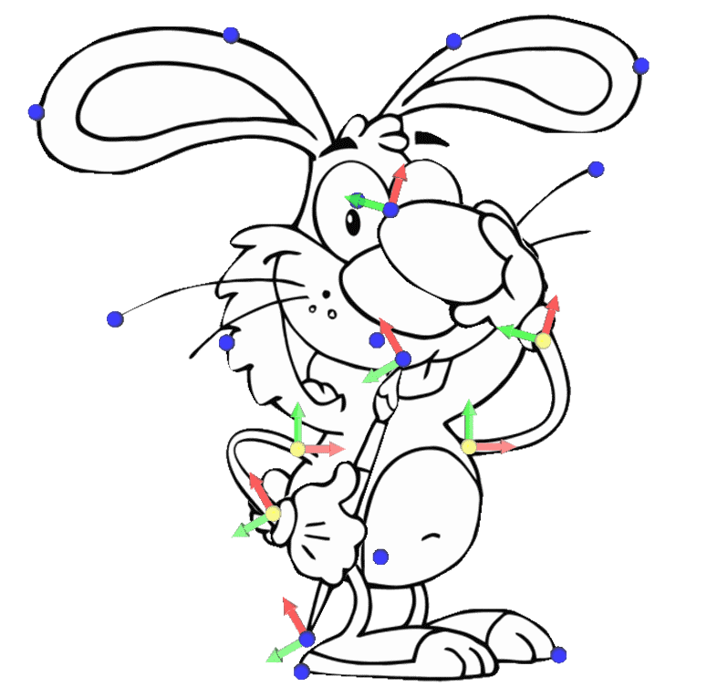 | Chuhua Xian, Shuo Jin, and Charlie C.L. Wang, "Efficient C2-weighting for image warping", IEEE Computer Graphics and Applications, vol.38, no.1, pp.59-76, January 2018. [PDF] [More Results] [Video@YouTube] |
| 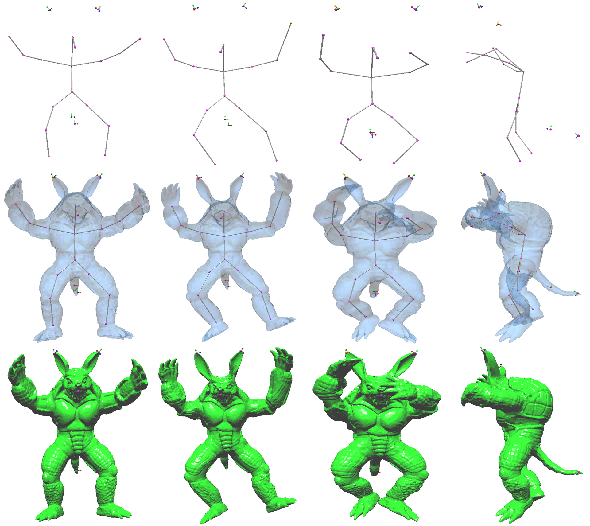 | Chuhua Xian, Junxian Huang, Shuo Jin, Guoliang Luo, Charlie C.L. Wang, "Real-time C^2-Weighting Based Character Skinning Powered by GPU", Computer Animation and Social Agents 2017, May 22-24, 2017 in Seoul, South Korea. |
| 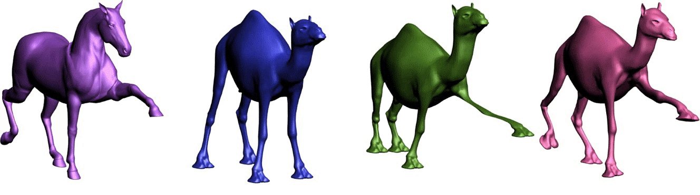 | Mengxiao Yin, Guiqing Li, Huina Lu, Yaobin Ouyang, Zhibang Zhang, Chuhua Xian. Spectral pose transfer. Computer Aided Geometry Design, 2015, 35: pp. 82 - 94. |
| 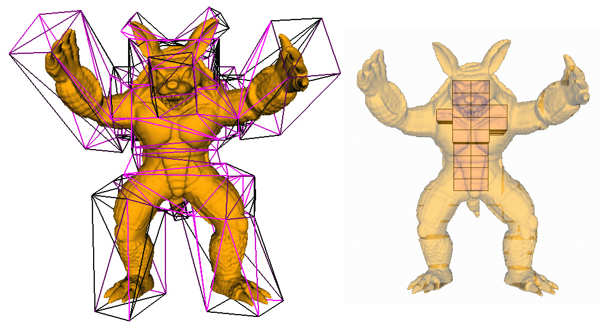 | Chuhua Xian,Guiqing Li, Yunhui Xiong. Efficient and Effective Cage Generation by Region Decomposition. Computer Animation and Virtual Worlds, 2015, 26(2): pp.173–184 |
| 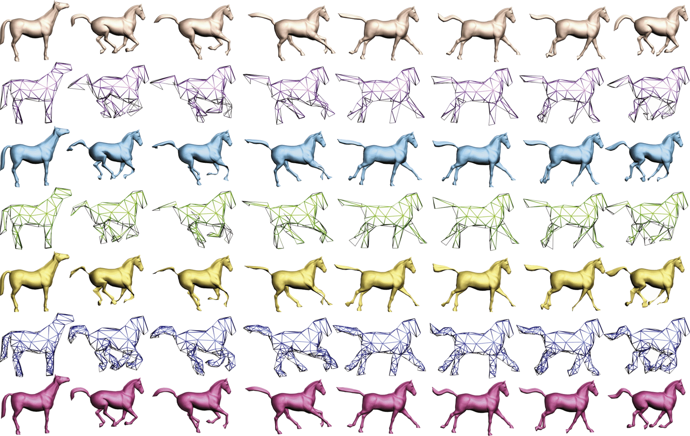 | Huina Lu, Guiqing Li, Chuhua Xian, Zhibang Zhang, Mengxiao Yin. EC-CageR: Error Controllable Cage Reverse Engineering for Animated Meshes. Computers & Graphics, 2015(46): pp. 138-148 |
| 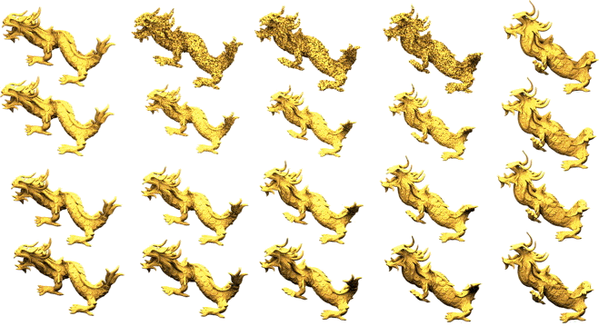 | Zhibang Zhang, Guiqing Li, Huina Lu, Yaobin Ouyang, Mengxiao Yin, Chuhua Xian. Fast As-Isometric-As-Possible Shape Interpolation. Computers & Graphics, 2015(46): pp. 244-256 |
| 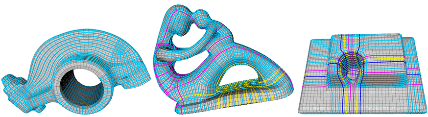 | Mengxiao Yin, Chuhua Xian, Yunhui Xiong, Zhibang Zhang and Guiqing Li. Properties of Helical Strips from Quad Meshes and Its Application. Journal of Computer Aided Design and Computer Graphics (Chinese Journal), 2014, 26(12): pp. 2107 - 2114. |
| 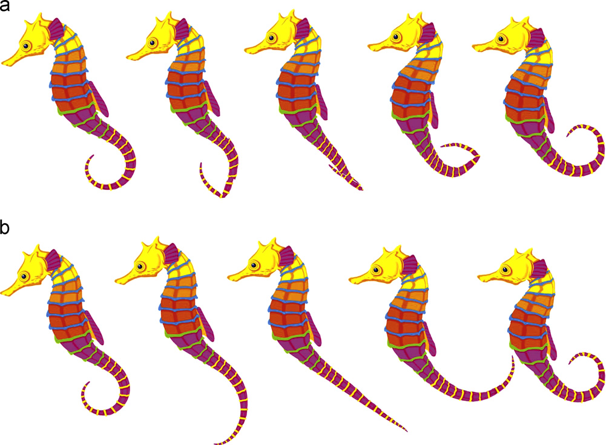 | Guiqing Li, Liang Yang, Shihao Wu, Wenshuang Tan, Xinyu Chu, Chuhua Xian. Planar Shape Interpolation Using Relative Velocity Fields. Computers & Graphics 37, 2013, pp. 364-375. [PDF] |
| 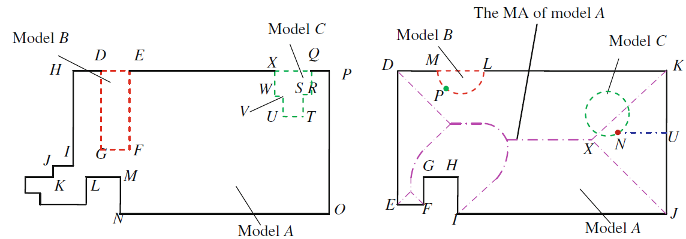 | Yusheng Liu, Chuhua Xian, Ming Li, et al. A Local Adaptation-based Generation Method of Medial Axis for Efficient Engineering Analysis. Engineering with Computers, 2013, 29(2): pp. 207-223. [PDF] |
| 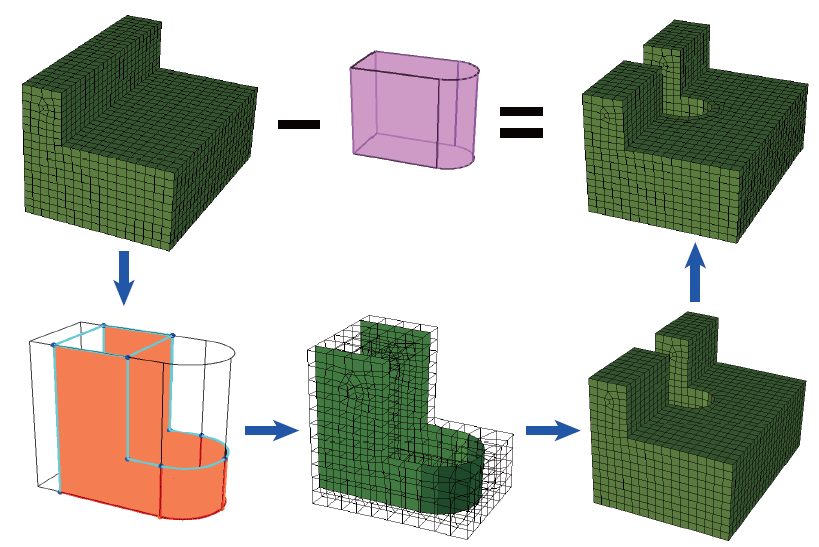 | Hua Zhu, Shuming Gao, Chuhua Xian.Hexahedral Mesh Cutting Using Geometric Model With New Boundaries Well Matched. Proceedings of the ASME 2012 International Design Engineering Technical Conferences & Computers and Information in Engineering Conference IDETC/CIE 2012, August 12-15, 2012, Chicago,IL, USA.[PDF] |
| 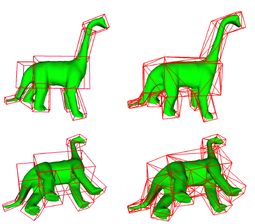 | Chuhua Xian, Hongwei Lin, Shuming Gao.Automatic Cage Generation by Improved OBBs for Mesh Deformation. The Visual Computer. Volume 28, Number 1, 2012, 21-33. |
| 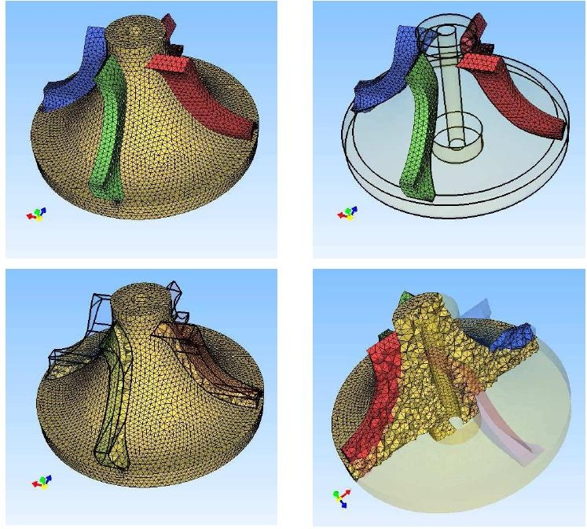 | Chuhua Xian, Shuming Gao, Tianming Zhang. An Approach to Automated Decomposition of Volumetric Mesh. Computer & Graphics (Special Issue of Shape Modeling International 2011), 2011, 35(3): pp. 461-470. [PDF][Slides] |
| 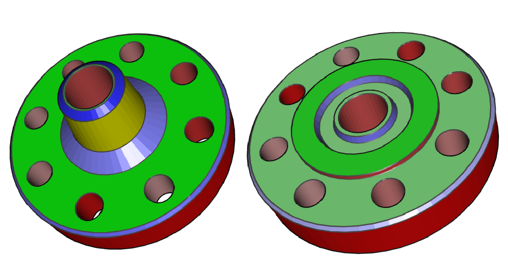 | Dong Xiao, Hongwei Lin, Chuhua Xian, Shuming Gao. CAD Mesh Model Segmentation by Clustering. Computer & Graphics (Shape Modeling International 2011), 2011, 35(3): pp. 685-691. [PDF][Slides] |
| 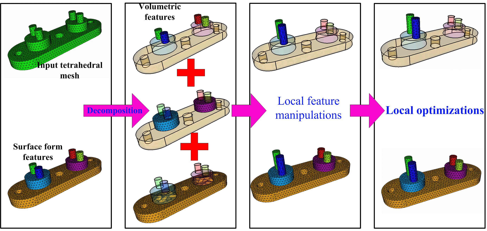 | Chuhua Xian, Shuming Gao, Tianming Zhang.Tetrahedral Mesh Editing with Local Feature Manipulation. IEEE International Conference of Computer Aided Design and Computer Graphics 2011. 2011.pp.130-137. |
| 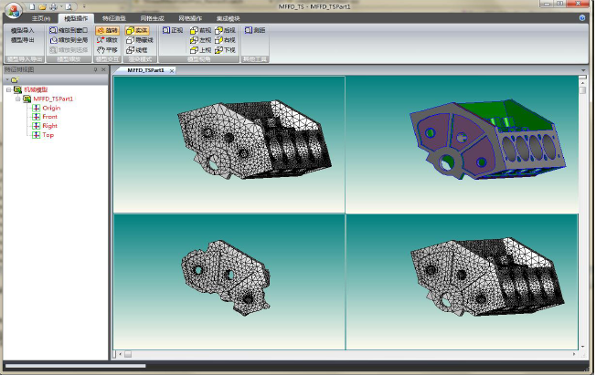 | Shuming Gao, Chenhao Hu, Hua Zhu, Chuhua Xian, Xiaoshen Chen. A CAD / CAE Integration Framework for Simulation Driven Design. 2011 Asian Conference on Design and Digital Engineering. 2011.[PDF] |
| 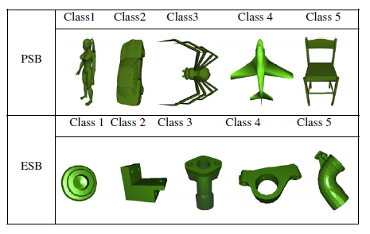 | Baokun Hu, Yusheng Liu, Shuming Gao, Rui Sun, Chuhua Xian. Parallel Relevance Feedback for 3D Model Retrieval Based on Fast Weighted-Center Particle Swarm Optimization. Pattern Recognition. 2010, 43(8): pp. 2950—2961.[PDF] |
| 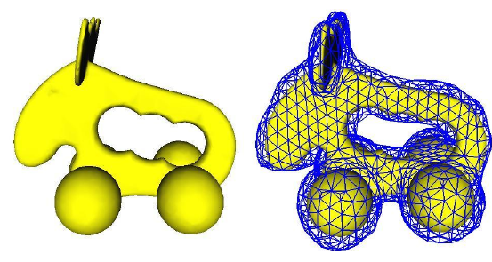 | Chuhua Xian, Hongwei Lin, Shuming Gao. Automatic Generation of Coarse Bounding Cages from Dense Meshes. Proceedings of Shape Modeling International (SMI) 2009, June 26-28, Beijing, China: pp. 21—27.[PDF] |
| Chuhua Xian, Shuming Gao, Hongwei Lin, Yusheng Liu, Dong Xiao. FEA-Mesh Editing with Feature Preserved. IEEE International Conference of Computer Aided Design and Computer Graphics 2009. | |
| Chuhua Xian, Yusheng Liu, Shuming Gao. Constructive MA Generation for 2D Models. IEEE International Conference of Computer Aided Design and Computer Graphics 2007. |
{kind=link}
{kind=link}
{kind=link}
{kind=link}
{kind=link}
{kind=link}
{kind=link}
{kind=link}
{kind=link}
{kind=link}
{kind=link}
{kind=link}
{kind=link}
{kind=link}
{kind=link}
{kind=link}
{kind=link}
{kind=link}